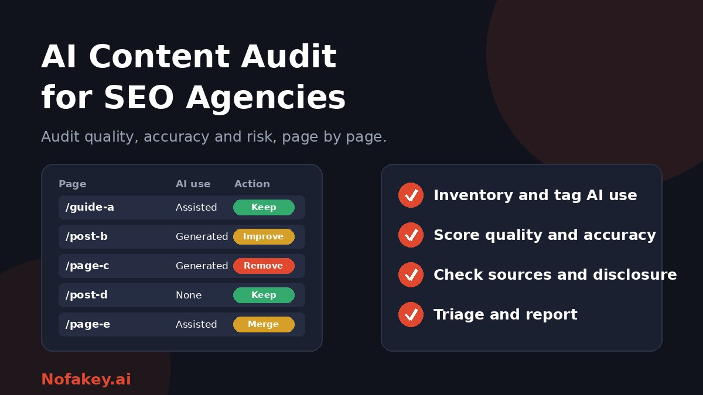

Clients now arrive with sites that mix human writing, AI drafts and AI-edited pages, often with no record of which is which. Agencies are asked a new question: is our content helping us or putting us at risk? An AI content audit gives you a structured way to answer. This guide shows a practical framework you can adapt for client work.
Three things people mean by "AI content audit"
| Meaning | What it involves |
|---|---|
| Audit using AI tools | Using AI to speed up analysis, clustering and scoring of a site's content |
| Audit of AI-generated content | Checking pages written or assisted by AI for quality, accuracy and risk |
| AI search visibility audit | Checking how well content can be found, understood and cited by AI search features |
This guide focuses on the second, which is the one many agencies skip, and touches on the others where they overlap.
Why agencies should audit AI content
- Hidden risk. AI drafts can contain confident errors, invented sources and thin, repetitive text.
- Scale problems. Mass-produced pages written mainly to capture searches are the pattern Google's spam policies target. See does Google penalize AI-generated content?
- Brand and legal exposure, especially in health, finance and legal topics.
- Prioritisation. Clients cannot fix everything, so they need a ranked list of what to do first.
- A clear service line. An evidence-based audit is easy to explain, price and repeat.
What not to build the audit on: detector scores
It is tempting to run every page through an AI detector and report percentages. Don't. Detectors give probabilities, can be wrong both ways, and Google evaluates helpfulness and quality, not whether a detector flags a page. A "30% AI" score tells a client nothing about whether the page is accurate or useful. Read are AI detectors accurate? for the reasons. Use detectors, at most, as a minor prompt to look closer.
The audit framework
- Set goals and scope. Agree what the client wants: risk reduction, traffic recovery, a clean-up before a migration or a content governance plan. Decide which sections, languages and page types are in scope.
- Build the inventory. Export all URLs from the CMS, sitemap and analytics, and add data such as traffic, conversions, links and last update.
- Tag AI involvement. Record how each page was made, using publishing records, author interviews and version history rather than guesses.
- Score each page. Use a consistent rubric for quality, accuracy, sources, intent and usefulness.
- Check disclosure and compliance. Confirm labels, author information and any regulated claims.
- Triage. Assign an action to each page and rank by business impact.
- Report and agree a plan. Present evidence, a prioritised roadmap and ownership.
- Set up governance. Put policies and review checkpoints in place so the problem does not return.
Tag AI involvement honestly
| Tag | Meaning | Evidence to use |
|---|---|---|
| Human-written | No generative AI used in drafting | Author confirmation, drafts, version history |
| AI-assisted | AI helped with research, outline, editing or translation | Process notes and editorial records |
| AI-drafted, human-edited | AI wrote the first draft and a person revised it | Prompts, drafts, edit history |
| AI-generated | Published with little or no human change | Workflow records, repeated patterns |
| Unknown | No reliable record | Mark honestly and score on quality |
"Unknown" is a legitimate tag. If you cannot show how a page was made, audit what is on the page.
A page scoring rubric
Score each criterion, for example on a simple three-point scale, and keep notes as evidence.
| Criterion | What to check |
|---|---|
| Accuracy | Facts, dates, names, figures and quotes verified against reliable sources |
| Sources | Citations exist, load, and support the claim. Look for invented or irrelevant references |
| Originality | Adds experience, data, examples or a clear point of view, not just a rewrite of what already ranks |
| Search intent | Answers what the reader actually wants, in the right format |
| Expertise and trust | Real author, relevant credentials, and clear ownership of the site |
| Duplication | No near-duplicate pages, doorway pages or cannibalising topics |
| Readability and experience | Clear structure, no filler, fast and usable on mobile |
| Risk | Sensitive topics, regulated claims, and missing disclaimers or disclosures |
Quality problems that often appear in AI content
- Invented or mismatched citations and statistics with no source.
- Generic filler: long introductions, repeated points and vague advice.
- Template pages that differ only by a keyword or location name.
- Outdated information presented as current.
- Contradictions between pages on the same site.
- No first-hand detail, such as examples, screenshots or case work.
- Wrong tone or brand voice and awkward phrasing.
Triage: keep, improve, merge or remove
| Action | When to use it |
|---|---|
| Keep | Accurate, useful, and meeting the page's goal |
| Improve | Good topic but weak depth, errors, or missing evidence and expertise |
| Merge | Several thin or overlapping pages that serve one intent |
| Remove or redirect | Low value, inaccurate or duplicated, with no realistic path to improve |
| Escalate | Legal, medical, financial or reputational risk needing expert review |
Rank by business impact: traffic, conversions, revenue relevance and risk. Make changes in stages and track results, instead of deleting hundreds of pages at once.
Check disclosure and transparency
- Is AI use disclosed where readers would expect it, such as health, finance, news and reviews?
- Do author pages and bylines reflect who is responsible?
- Are images clearly labeled when AI-generated? See how to label AI-generated content.
- Is there an editorial policy explaining how content is created and checked?
What to put in the client report
- Executive summary: what you found, the main risks and the top priorities.
- Method: scope, how AI use was tagged, and the scoring rubric.
- Findings in the form Issue → Evidence → Fix, with example pages.
- Page-level spreadsheet with tags, scores and recommended actions.
- Prioritised roadmap with owners, effort and timelines.
- Governance recommendations, including an AI use policy and review steps.
- Honest expectations: what the work can improve and what it cannot guarantee.
Build governance so the problem does not return
- Write an AI use policy that states what AI may be used for and what needs human review.
- Require fact-checking and source verification before publishing.
- Keep process records, such as drafts, prompts and approvals.
- Assign named owners for each content area.
- Review high-value pages regularly, and after major search updates or traffic drops.
Where AI search visibility fits in
Many clients also ask whether their content can be found and cited in AI-generated answers. The basics overlap with a good audit: clear, accurate, well-structured pages that say who is behind them and back claims with sources. Treat tactics sold as shortcuts with caution, because search and AI systems change often and nobody can guarantee inclusion.
Related reading
Editorial teams face similar choices. See AI detectors for publishers and editors for a review workflow, and how to detect AI-generated product reviews if a client's site hosts user reviews.
Conclusion
A good AI content audit gives clients clarity: what they have, how it was made, how good it is, and what to do next. Build it on evidence such as accuracy, sources, originality and usefulness, tag AI use honestly, triage by impact, and set up governance to keep content healthy. For a quick first read on a suspicious claim or message from a client's site, try our free checker, and find more guides on the Nofakey.ai blog.
Frequently asked questions
What is an AI content audit?
The term is used in three ways: auditing a site's content with AI tools, auditing AI-generated or AI-assisted content for quality and risk, and auditing how well content can be found and cited in AI search. This guide focuses on the second, with notes on the others.
Should agencies use AI detectors in a content audit?
Only as a minor clue. Detectors are unreliable, and Google evaluates quality and helpfulness, not whether AI was used. Audit accuracy, originality, sources and usefulness instead.
What should be checked on AI-assisted pages?
Factual accuracy, invented or broken sources, originality, search intent match, real expertise and experience, duplicated or thin content, disclosure, and the overall reader experience.
How often should AI content be audited?
Run a full baseline audit when onboarding a client, then review regularly, such as quarterly for high-value pages, and after major search updates or traffic drops.
Can an audit guarantee better rankings?
No. An audit can find and fix quality problems, but no agency can guarantee rankings. Set expectations with clients accordingly.
Want a quick first read on a claim or message?
Run it through the checker